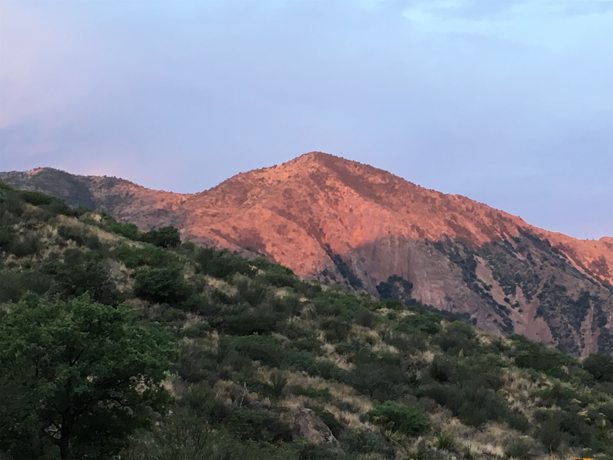

Wednesday, Jun 6, 2018, 4:08 PM CDT
Panther Junction, Big Bend National Park, TX, United States
102°F Sunny
102°F Sunny
![]()
6/4 Woodbury, MN -> Wichita, KS 643 mi, 11 hr
6/5 Wichita, KS -> Sweetwater, TX 468 mi, 7.5 hr
6/6 Sweetwater, TX -> Chisos Mountains Lodge, TX 350 mi, 8 hr
6/7 Chisos Mountains Lodge, TX -> Santa Elana Canyon RT 100 mi, 4.25 hr
Trip Total: 1,561 mi
On the way to our first park (of 34) on this road trip, we saw lush rolling hills, armadillo road kill, ghost and near-death towns, Whataburger chains, oil pumps, and numerous massive clusters of wind turbines stretching as far as you could see. Passing through West Texas oil country, where oil trucks dominated the road and gas was over $3/gallon, we gradually entered the desert, which was very hot and very isolated. We had to constantly think about our next gas stop. Even Verizon had no cell service, and only distant Mexican AM radio.
The Park, where the Rio Grande makes a 90-degree turn, is unique for its isolation and the combination of three features: Desert (Chihuahuan), Mountains (Chisos), and River (Rio Grande). We started with a temp of 103 degrees, and 20 minutes later and 2,000 feet higher we were in the mountains at our mile-high Chisos Mountains Lodge at 71 degrees, complete with a 1/2 hour-long downpour that started again at sunset. This is the darkest National Park, but unfortunately two cloudy nights covered the stars.
At sunrise, we took the Ross Maxwell Scenic Drive to the Santa Elana Canyon and the Rio Grande, and saw Mexico across the river, after a short hike in 86 degree heat. A new knee-deep muddy creek from yesterday’s rain blocked the complete hike for us, but not for an adventurous couple. Along the way, we saw white snails, giant reddish-brown millipedes, a black bear and her cub, two deer, numerous jackrabbits, a few roadrunners, and I think we ran over a tarantula. The ever-changing view revealed mountains of brown, red, white, yellow, and green. Our deck overlooked the famous Window, a V-shaped cut in the mountains that is famous for sunset framing, and we watched it set.
